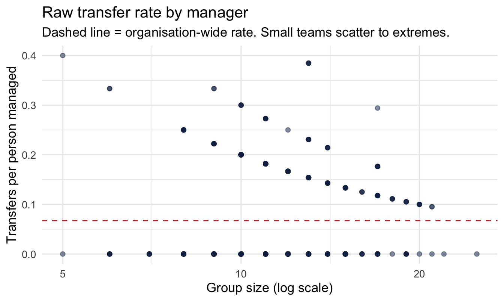
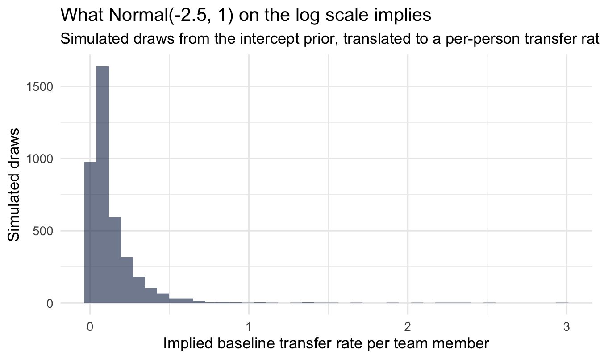
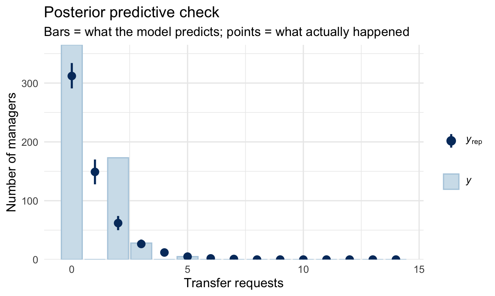
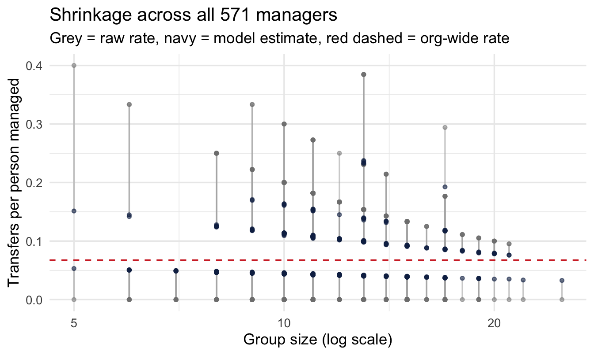
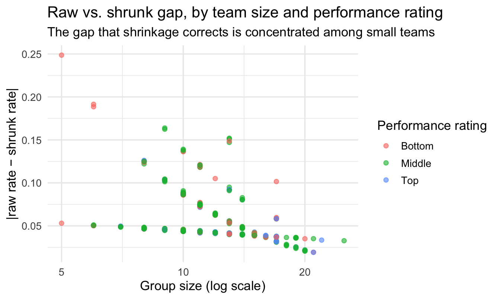

library(tidyverse)
library(peopleanalyticsdata)
library(brms)
library(tidybayes)
theme_set(theme_minimal(base_size = 13))
set.seed(2026)
data("managers", package = "peopleanalyticsdata")
# Guard against missing values before modelling (Chapter 1 found gaps
# in a similar teaching dataset).
managers <- managers |>
drop_na(transfers, group_size, employee_id, city, performance_group)15 Bayesian Shrinkage: Ranking Managers and Teams Fairly
Welcome back
This is the chapter most directly behind this book’s existence. Every People Analytics team eventually gets asked for a manager league table — who has the most engaged team, the best retention, the fewest complaints. And every People Analytics team eventually discovers the same trap: the “best” and “worst” managers on a raw league table are usually the ones with the smallest teams, not the ones actually doing the best or worst job.
Chapter 14 introduced empirical Bayes as a fast, closed-form fix for this. This chapter fits the full Bayesian version — a multilevel model — so you get a defensible answer with proper uncertainty for every manager, not just a point estimate.
Important
If you take one technique from this book back to your desk, make it this one. It changes how you should present any manager or team comparison you’re ever asked to produce.
Analysis strategy
What we have. One row per manager: how many transfer requests their team filed, and how many people they manage. Team sizes range from a handful to dozens, which is what makes the obvious metric unsafe.
What would answer the question. Each manager’s underlying rate of transfer requests per person managed, with an interval — and a ranking that a manager on the wrong end of it could not fairly object to, which is a higher bar than a ranking that is arithmetically correct.
What could go wrong. Transfers divided by headcount looks like a rate and behaves like a lottery for the small teams: one person asking to move puts a three-report manager at the top of the list. This is Chapter 8’s problem again, with two things that make it worse. The unit is now an individual person with a name, so the cost of being wrong is borne by them rather than by an office. And the denominator hides an assumption — requests accumulate over a manager’s whole tenure while headcount is a snapshot of today.
So the plan. Model the counts as counts, with team size as an exposure rather than a divisor. Give each manager their own intercept, tied to the organisation-wide rate so that thin evidence gets pulled toward it. Report the shrunken estimates with intervals, and never the raw table.
What would make us stop. If the between-manager variation comes back small relative to the noise, the deliverable is “we cannot reliably tell these managers apart on this data” — and no list goes out. Given what a list like this is used for, that is the outcome worth being most willing to deliver.
What you’ll be able to do by the end
- Explain why a manager’s team size affects how much you should trust a metric calculated about their team
- Fit a Bayesian multilevel model for a rate with an exposure (events per person managed)
- Extract and visualise shrinkage for individual managers, not just for aggregate groups
- Compare a shrunk ranking to a raw one, and to an existing performance rating
- Present shrunk results to a business audience that wants a simple league table
15.1 Setup
We’re back with managers (571 managers, one row each). Two columns do the work in this chapter:
transfers— the number of transfer requests filed by people in a manager’s group while they’ve been the manager. Read as a warning signal: a group asking to leave.group_size— how many people the manager is responsible for. This is the exposure: the number of chances a transfer request had to happen.
NoteTwo assumptions in that word “exposure”, stated up front
transfers accumulates over however long someone has been a manager. group_size is a snapshot of the team now. Dividing one by the other quietly assumes two things, and this chapter assumes both:
- Every manager has been observed for the same length of time. If they haven’t, a manager of eight years looks worse than a manager of two for no reason other than having been watched longer, and the model will read that as a difference in management.
- Team sizes have been roughly stable. A manager whose team has doubled since most of those requests were filed has the wrong denominator.
On real data, neither usually holds, and the fix is not difficult: use person-months at risk as the offset instead of headcount — log(group_size * months_managed) in place of log(group_size). Every line of code below works unchanged; only the offset changes. The teaching dataset doesn’t carry a tenure-as-manager column, so we assume equal windows and stable teams and say so, rather than computing a rate per unit of something and hoping nobody asks which unit.
This is the single most common way a manager league table goes wrong before any statistics are involved, and it is worth checking before you model anything: is the denominator the same kind of thing for everyone?
15.2 The problem: a league table that misleads
15.2.1 The raw rate
The obvious metric is transfers per person managed:
managers <- managers |>
mutate(raw_rate = transfers / group_size)
managers |>
select(employee_id, city, group_size, transfers, raw_rate,
performance_group) |>
arrange(desc(raw_rate)) |>
head(10) employee_id city group_size transfers raw_rate performance_group
1 0ba1e858 Toronto 5 2 0.4000000 Bottom
2 1bb4fc5e New York 13 5 0.3846154 Middle
3 314bc11c New York 13 5 0.3846154 Middle
4 aa3a9fb5 Toronto 13 5 0.3846154 Middle
5 c848bdb0 Toronto 13 5 0.3846154 Bottom
6 5a343b35 New York 9 3 0.3333333 Middle
7 9b3dc002 Toronto 9 3 0.3333333 Middle
8 1623d0c9 San Francisco 6 2 0.3333333 Bottom
9 72cd94a4 Toronto 6 2 0.3333333 Bottom
10 27644867 Orlando 10 3 0.3000000 Middleggplot(managers, aes(x = group_size, y = raw_rate)) +
geom_point(alpha = 0.5, colour = "#122a52") +
geom_hline(yintercept = sum(managers$transfers) / sum(managers$group_size),
linetype = "dashed", colour = "#d32f2f") +
scale_x_log10() +
labs(
title = "Raw transfer rate by manager",
subtitle = "Dashed line = organisation-wide rate. Small teams scatter to extremes.",
x = "Group size (log scale)", y = "Transfers per person managed"
)
15.2.2 The five-report problem
Look at the top of that table, and at the scatter plot: the most alarming raw rates cluster among managers with the smallest teams.
Important
A manager with 3 reports and 1 transfer request has a raw rate of 33% — worse than almost anyone else in the company on paper. A manager with 80 reports and 5 transfer requests has a raw rate of just 6%. Is the first manager really eight times worse? Or did one person, for reasons that might have nothing to do with management quality, ask for a transfer?
This is exactly the same arithmetic trap as Chapter 8’s guest-review counts and Chapter 14’s city complaint rates — but now the “group” with too little data is an individual manager, which is precisely the population most PA teams are asked to rank.
15.3 Three ways to handle it (recap)
- Complete pooling — assume every manager has the same true rate. Ignores real differences between managers.
- No pooling — trust every manager’s raw rate exactly as calculated. Over-trusts the small teams shown above.
- Partial pooling — each manager gets their own estimate, pulled toward the organisation-wide rate by an amount the data itself decides, based on
group_size.
15.4 Fitting the model
This is count data with an exposure that varies hugely across managers — the right tool is a Poisson (or negative binomial) model with group_size entered as an offset, and a varying intercept per manager so the model can borrow strength across all 571 of them:
Another log-scale intercept, so — same habit as Chapters 9 and 12 — translate it before trusting it:
set.seed(13)
tibble(log_intercept = rnorm(4000, -2.5, 1)) |>
mutate(rate = exp(log_intercept)) |>
ggplot(aes(rate)) +
geom_histogram(bins = 40, fill = "#122a52", alpha = 0.6) +
labs(title = "What Normal(-2.5, 1) on the log scale implies",
subtitle = "Simulated draws from the intercept prior, translated to a per-person transfer rate",
x = "Implied baseline transfer rate per team member", y = "Simulated draws")
Note
Centred around 8% (exp(-2.5)), with plenty of room either side — a sensible starting point for a rate we haven’t looked at yet, and nothing like a confident claim about the true organisation-wide figure.
fit_shrink <- brm(
transfers ~ 1 + (1 | employee_id) + offset(log(group_size)),
data = managers, family = poisson(),
prior = c(prior(normal(-2.5, 1), class = Intercept),
prior(exponential(2), class = sd)),
chains = 4, iter = 2000, seed = 13, refresh = 0
)
summary(fit_shrink) Family: poisson
Links: mu = log
Formula: transfers ~ 1 + (1 | employee_id) + offset(log(group_size))
Data: managers (Number of observations: 571)
Draws: 4 chains, each with iter = 2000; warmup = 1000; thin = 1;
total post-warmup draws = 4000
Multilevel Hyperparameters:
~employee_id (Number of levels: 571)
Estimate Est.Error l-95% CI u-95% CI Rhat Bulk_ESS Tail_ESS
sd(Intercept) 0.88 0.10 0.70 1.08 1.00 986 1912
Regression Coefficients:
Estimate Est.Error l-95% CI u-95% CI Rhat Bulk_ESS Tail_ESS
Intercept -3.06 0.09 -3.24 -2.89 1.00 1682 2440
Draws were sampled using sampling(NUTS). For each parameter, Bulk_ESS
and Tail_ESS are effective sample size measures, and Rhat is the potential
scale reduction factor on split chains (at convergence, Rhat = 1).
NoteReading this formula
transfers ~ 1 + (1 | employee_id) + offset(log(group_size)) says: each manager’s expected transfer count is their group_size (the offset — not something we’re estimating, just accounting for) times a rate. That rate is the organisation-wide rate (1, the Intercept) plus a manager-specific adjustment drawn from a shared distribution ((1 | employee_id)) — exactly the varying-intercepts idea from Chapter 8, just applied one manager at a time instead of one property at a time.
NoteA different lens: this is a Bayesian version of a model you may already know
If you’ve fitted a mixed-effects / random-effects model before — lme4::lmer() or glmer() in R, or their equivalents elsewhere — you’ve already used the frequentist cousin of this exact model. The (1 | employee_id) syntax is even identical. The classical version gives you a point estimate for each manager’s random effect (a BLUP, “best linear unbiased predictor”) and a standard error built on asymptotic approximations that get shaky for small groups — precisely the groups we care most about here. The Bayesian version gives every manager a full posterior distribution instead of a point-plus-error-bar, which turns out to matter exactly when a manager’s team is small enough that “asymptotic” assumptions stop being a safe bet. Same shrinkage mechanism either way — the difference is what you get to say about the uncertainty afterward.
TipOnly one row per manager — does that break anything?
No. The model doesn’t need repeated observations for each manager to learn from them collectively — it needs many managers, each contributing one data point of varying precision (set by group_size). It’s the same logic as estimating 571 baseball players’ true batting averages from a single season each: no one player gives you much, but the pattern across all 571 tells the model how much any one manager’s raw rate should be trusted.
15.4.1 What the group-level parameter tells you
sd_estimate <- summary(fit_shrink)$random$employee_id
sd_estimate Estimate Est.Error l-95% CI u-95% CI Rhat Bulk_ESS
sd(Intercept) 0.8801281 0.09520379 0.6989286 1.076519 1.001642 986.0813
Tail_ESS
sd(Intercept) 1912.429sd(Intercept) here is a genuine finding: it bounds how much managers’ true transfer rates could vary — or at least, how much whatever drives transfer requests varies — once you strip away the noise from different team sizes. A large value says that whatever it is varies a lot across the organisation; a small value says most of the raw league table’s spread was noise all along.
NoteWhy “bounds” rather than “measures”
There is one row per manager in this data, so the manager-level term is also an observation-level random effect: there is exactly one observation inside each group. Mathematically that makes it indistinguishable from an overdispersion term — a parameter that mops up any spread the Poisson alone cannot produce, whatever its source.
So sd(Intercept) here is an upper bound on genuine between-manager variation rather than a clean isolation of it. Real differences between managers are in there; so is anything else that makes the counts more spread out than Poisson expects, from team composition to how consistently requests get logged.
None of this touches the shrinkage or the ranking, which is what the chapter is about — the estimates still move by exactly as much as each manager’s evidence warrants. It does mean that if you want to quote the between-manager spread as a number, you need repeated observations per manager (several quarters, say), so the model can tell manager-level variation apart from period-to-period noise. With one row each, the honest sentence is “at most this much”.
15.4.2 Diagnose, then check
Two steps of the workflow before any estimate leaves this model, and they answer different questions.
Did the sampler work? summary() above reports Rhat and ESS for every parameter. This model has a group-level sd estimated from many small groups, which is the geometry Chapter 11 warns about, so it is worth a deliberate look rather than a glance.
Can the model produce data like ours? A count outcome needs the bar version of the check, as in Chapter 12:
pp_check(fit_shrink, type = "bars", ndraws = 100) +
labs(title = "Posterior predictive check",
subtitle = "Bars = what the model predicts; points = what actually happened",
x = "Transfer requests", y = "Number of managers")
The failure to watch for here is the one Chapter 12 named: if the observed counts in the right-hand tail sit above their bars, the Poisson is under-covering and the shrunk estimates will be too confident. The negbinomial() swap from Chapter 12 is the fix, and it changes the intervals rather than the ranking.
15.5 Extracting each manager’s shrunk rate
To compare fairly, we ask the model for each manager’s expected rate per single person managed — set group_size to 1 in new data so the offset drops out, while keeping each manager’s own fitted adjustment:
shrunk <- managers |>
mutate(group_size = 1) |>
add_epred_draws(fit_shrink, re_formula = NULL) |>
mean_qi(.epred, .width = 0.95) |>
rename(shrunk_rate = .epred, lower = .lower, upper = .upper)
managers_compare <- managers |>
select(employee_id, city, group_size, transfers, raw_rate,
performance_group) |>
left_join(shrunk |> select(employee_id, shrunk_rate, lower, upper),
by = "employee_id")
managers_compare |> arrange(desc(shrunk_rate)) |> head(10) employee_id city group_size transfers raw_rate performance_group
1 314bc11c New York 13 5 0.3846154 Middle
2 c848bdb0 Toronto 13 5 0.3846154 Bottom
3 aa3a9fb5 Toronto 13 5 0.3846154 Middle
4 1bb4fc5e New York 13 5 0.3846154 Middle
5 a18ecc4e Orlando 17 5 0.2941176 Bottom
6 5a343b35 New York 9 3 0.3333333 Middle
7 9b3dc002 Toronto 9 3 0.3333333 Middle
8 64e3a1ba Toronto 10 3 0.3000000 Bottom
9 27644867 Orlando 10 3 0.3000000 Middle
10 bb595127 New York 10 3 0.3000000 Middle
shrunk_rate lower upper
1 0.2375579 0.07118788 0.5310225
2 0.2359146 0.07428771 0.5246773
3 0.2334234 0.07470567 0.4953736
4 0.2326504 0.07424577 0.5119368
5 0.1925484 0.06305713 0.4085184
6 0.1709058 0.04053752 0.4351173
7 0.1694683 0.04174846 0.4245694
8 0.1637459 0.03759464 0.4165596
9 0.1632371 0.03975856 0.4147589
10 0.1619377 0.03769217 0.410310615.5.1 See the shrinkage
ggplot(managers_compare, aes(x = group_size)) +
geom_hline(yintercept = sum(managers$transfers) / sum(managers$group_size),
linetype = "dashed", colour = "#d32f2f") +
geom_segment(aes(xend = group_size, y = raw_rate, yend = shrunk_rate),
colour = "grey70", alpha = 0.6) +
geom_point(aes(y = raw_rate), colour = "grey50", alpha = 0.5, size = 1.2) +
geom_point(aes(y = shrunk_rate), colour = "#122a52", alpha = 0.6, size = 1.2) +
scale_x_log10() +
coord_cartesian(ylim = c(0, 0.4)) +
labs(
title = "Shrinkage across all 571 managers",
subtitle = "Grey = raw rate, navy = model estimate, red dashed = org-wide rate",
x = "Group size (log scale)", y = "Transfers per person managed"
)
Small-team managers move the furthest — often dramatically — while large-team managers barely move, because their own data is already trustworthy.
Important
The manager with 3 reports and a 33% raw rate is not “the worst manager in the company” once you shrink properly — their small-team estimate gets pulled hard toward the organisational average, because three observations tell you almost nothing on their own.
15.6 Does the shrunk ranking agree with the official rating?
managers also has a performance_group label (Bottom / Middle / Top performer) from an actual review process. A useful sanity check: where does the shrunk transfer-rate ranking disagree with that rating, and is disagreement more common for small-team managers?
managers_compare |>
group_by(performance_group) |>
summarise(
n = n(),
mean_raw = mean(raw_rate),
mean_shrunk = mean(shrunk_rate),
mean_group_size = mean(group_size)
)# A tibble: 3 × 5
performance_group n mean_raw mean_shrunk mean_group_size
<fct> <int> <dbl> <dbl> <dbl>
1 Bottom 129 0.0821 0.0736 11.4
2 Middle 376 0.0663 0.0675 11.8
3 Top 66 0.0434 0.0583 12.6managers_compare |>
mutate(gap = abs(raw_rate - shrunk_rate)) |>
ggplot(aes(x = group_size, y = gap, colour = performance_group)) +
geom_point(alpha = 0.6) +
scale_x_log10() +
labs(
title = "Raw vs. shrunk gap, by team size and performance rating",
subtitle = "The gap that shrinkage corrects is concentrated among small teams",
x = "Group size (log scale)", y = "|raw rate − shrunk rate|",
colour = "Performance rating"
)
CautionTry it yourself
Filter to managers where the raw rate would have put them in the “worst 10%” of the league table, but the shrunk rate does not. How many are there, and what does their performance_group say? This is precisely the group a naive league table would have unfairly flagged.
TipFor the ML/DS crowd
This exact problem — stabilising an estimate for an entity with too little of its own data, by borrowing strength from everyone else’s — is also how production recommender systems handle new or low-activity users and items. A user with two ratings gets their predicted preferences shrunk toward the population average; one with two thousand ratings is trusted almost entirely on their own history. It’s the same partial-pooling logic as this chapter, usually fitted with matrix factorisation and a regularisation term rather than brms, but solving an identical problem: don’t let sparse data pretend to be confident.
15.7 Presenting this to a business audience that wants a league table anyway
Stakeholders often want exactly the artefact this chapter argues against: a ranked list. You don’t have to refuse — you have to change what the list shows.
The deeper fix is to change what the list is for. A ranking invites the question “who is worst?”; a decision invites “who should we act on, and is acting worth it?” Chapter 24 takes these same posteriors and answers the second question, including the uncomfortable part — how many of the managers you pick will turn out to have been the wrong choice.
NoteThree practical fixes for the deck
- Show the credible interval, not just a point estimate. A manager whose 95% interval overlaps ten other managers’ intervals is not meaningfully different from them — say so, rather than presenting rank 14 as distinct from rank 24.
- Report team size alongside the rank. “Rank 3 of 571 (team of 6)” reads very differently from “Rank 3 of 571 (team of 84)” — let the audience see the input to their own scepticism.
- Group into tiers, not individual ranks. “Clearly above organisational average,” “not distinguishable from average,” “clearly below average” — based on whether the credible interval excludes the organisation-wide rate — resists the false precision of rank 47 vs. rank 48.
managers_compare |>
mutate(
org_rate = sum(managers$transfers) / sum(managers$group_size),
tier = case_when(
lower > org_rate ~ "Clearly above average",
upper < org_rate ~ "Clearly below average",
TRUE ~ "Not distinguishable from average"
)
) |>
count(tier) tier n
1 Clearly above average 4
2 Not distinguishable from average 567This single table is usually the most useful thing you can hand a senior stakeholder: most managers, once you’re honest about uncertainty, are not distinguishable from average — and that’s a finding, not a disappointment.
On the job
ImportantWhy this matters day to day
Any time you’re asked to rank people-metrics across managers, teams, stores, or offices of different sizes — attrition, engagement, complaints, absence, sales per head — this chapter’s approach applies directly. Publishing the raw league table is the single most common statistical mistake in People Analytics reporting, and it’s an easy one to fix once you know to look for it: check whether the extremes cluster among the smallest groups. If they do, shrink before you share.
Summary
NoteToday you learned
- Raw per-manager rates are least trustworthy exactly where team size is smallest — and those are usually the ones that end up at the extremes of a league table.
- A Poisson model with
group_sizeas an offset and a varying intercept per manager lets you partially pool rates across an entire population of managers, even with one row per manager. - Shrinkage pulls small-team managers’ rates toward the organisation-wide average, by an amount the model — not you — decides.
- Comparing shrunk estimates to an existing performance rating is a useful sanity check, and often reveals that small-team managers were being mis-ranked.
- You can still hand over a league table — just report uncertainty and team size alongside rank, or replace individual ranks with tiers.
Next chapter
Hierarchical models for pay and variance — we take the same partial-pooling machinery and point it at a different, equally sensitive question: how much pay variation actually sits at the level, function, or location layer, versus being individual noise?